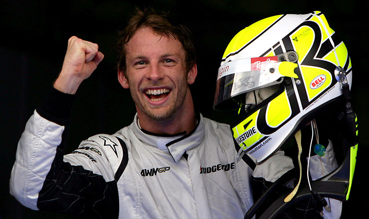

.png)
Jenson Button – Campione del Mondo 2009
Jenson Button è uno dei piloti britannici più amati in Formula 1. Con uno stile di guida fluido e intelligente, ha raggiunto l’apice della sua carriera nel 2009 vincendo il Campionato del Mondo con la Brawn GP. La sua carriera è iniziata nel 2000 e lo ha visto gareggiare con team storici come Williams, Benetton, Honda, McLaren e Renault.
La Magia del 2009 con la Brawn GP
Il 2009 è stato l’anno della svolta. Dopo l’uscita della Honda F1, Ross Brawn salvò la scuderia creando la Brawn GP. Con un progetto rivoluzionario e un diffusore doppio, Button dominò l’inizio della stagione vincendo 6 delle prime 7 gare. Con una guida costante e intelligente, conquistò il titolo con una gara d’anticipo in Brasile, coronando il sogno della sua carriera.
Una Carriera Ricca di Esperienza
Dopo il 2009, Button continuò a competere ad alti livelli con McLaren, dove vinse diverse gare e fu compagno di squadra di Lewis Hamilton. Nel 2011 fu secondo in campionato dietro Sebastian Vettel. È conosciuto per la sua abilità sul bagnato, la gestione delle gomme e una guida sempre elegante e pulita. Si è ritirato nel 2017, ma rimane una figura amatissima nel paddock.
I Caschi Iconici di Button
Casco stagione 2009 – Brawn GP
Casco McLaren – Rosso e argento
Ultimi anni in McLaren – 2014